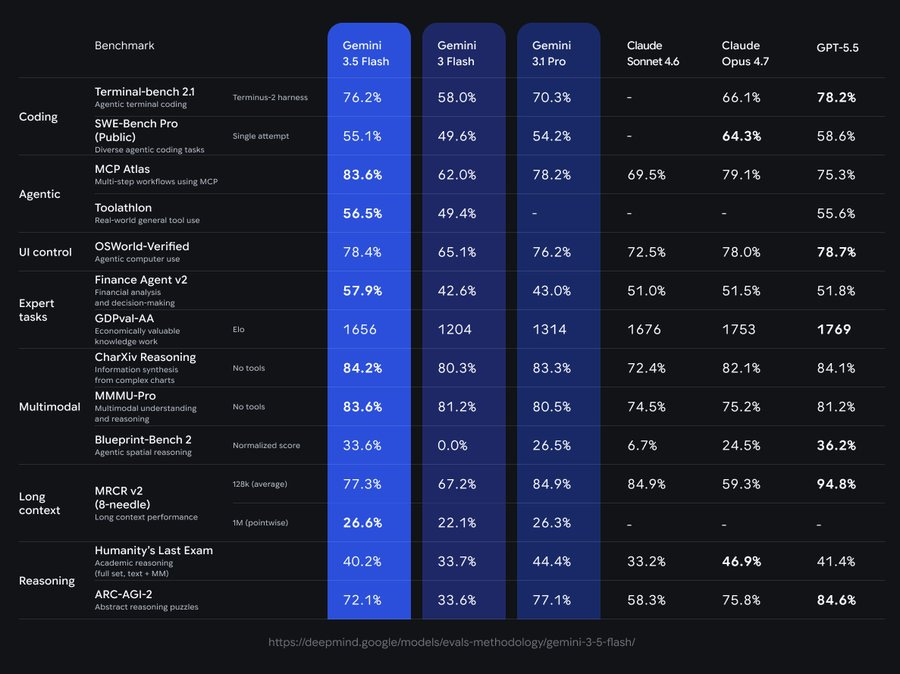
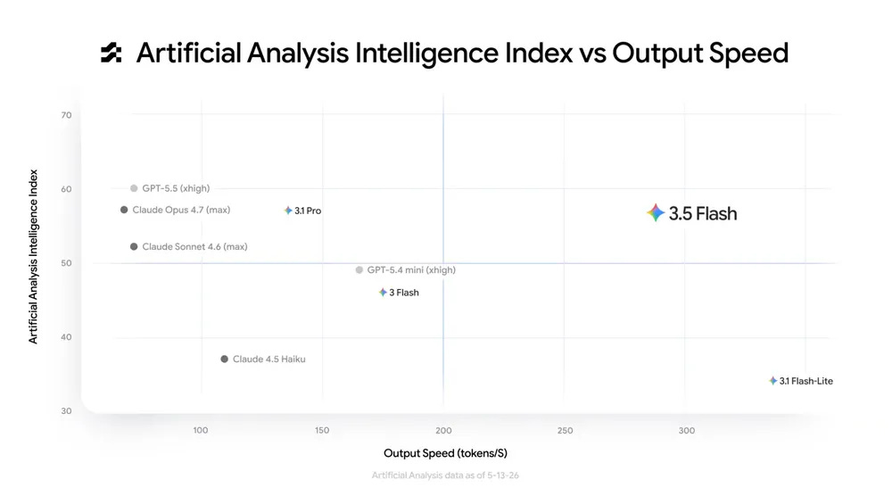
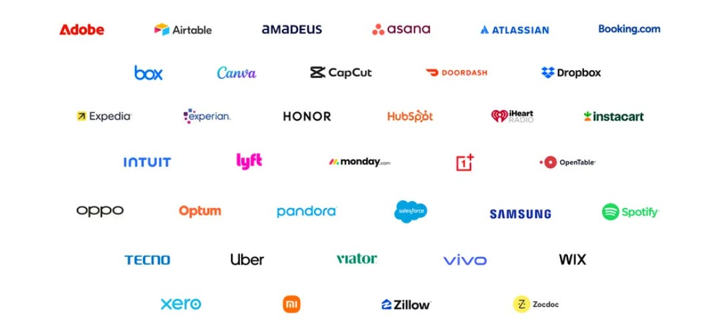

Zvi: Gemini 3.5 Flash Looks Good For How
title: "Zvi: Gemini 3.5 Flash Looks Good For How" source: https://thezvi.substack.com/p/gemini-35-flash-looks-good-for-how author: unknown date: unknown models: [gemini-3-5-flash, gemini-3-5-pro] tags: [] mirrored: 2026-10-22 note: mirrored against link rot by the Pantheon; all rights with the original author
Gemini 3.5 Flash Looks Good For How Fast It Is
[
 ](https://substack.com/@thezvi)
](https://substack.com/@thezvi)
May 22, 2026
Google once again has a model worth at least some consideration. Gemini 3.5 Flash is likely the best model out there at its particular speed point, as long as you don’t mind that it is a Gemini model. So for cases where speed kills, this can be a reasonable choice. Otherwise, I don’t see signs you would want to use it over Opus 4.7 or GPT-5.5.
Google also had some other offerings for I/O Day, which this post will also cover.
Introducing Google Gemini 3.5 ‘Flash’
Google introduced Gemini 3.5 Flash, which it seems is for now their universal model until 3.5 Pro comes along. It is live in the usual places. It is a hybrid, where it has the speed of Flash but the cost is at least halfway to models like Opus and GPT-5.5.
Gemini 3.5 Pro is confirmed for next month.
They are focused on 3.5 Flash as a daily driver for agentic tasks. It has the advantage of being faster and cheaper than Claude Opus 4.7 or GPT-5.5, if it can do the job. Not as cheap as previous Flash models, though, this is basically a hybrid:
As always, this is presented as Google’s strongest model yet for all the things.
Jeff Dean: 1/ Today at #GoogleIO, we’re releasing Gemini 3.5, our latest family of models combining frontier intelligence with action. We’re starting by releasing 3.5 Flash, which is built to help you execute complex, long-horizon agentic workflows.
It outscores 3.1 Pro on agentic and coding benchmarks like Terminal-Bench and MCP Atlas, while running 4x faster than other frontier models.
Used in Google Antigravity, 3.5 Flash is even further optimized to be up to 12x faster. It’s a powerful engine to deploy sub-agents that collaborate, run high-frequency iterative loops, and solve real-world problems at scale.
Here is their benchmark presentation:
[

](https://substackcdn.com/image/fetch/$s_!SKZO!,f_auto,q_auto:good,fl_progressive:steep/https%3A%2F%2Fsubstack-post-media.s3.amazonaws.com%2Fpublic%2Fimages%2F5871b14d-35f1-4089-83a1-8c4a46727ade_900x674.jpeg)
[

](https://substackcdn.com/image/fetch/$s_!-UxL!,f_auto,q_auto:good,fl_progressive:steep/https%3A%2F%2Fsubstack-post-media.s3.amazonaws.com%2Fpublic%2Fimages%2F7f7fc27a-d720-4ca8-aa56-ba59898a4b27_1000x556.webp)
Koray Kavukcuoglu: When coupled with the updated Antigravity harness, 3.5 Flash becomes a powerful engine for deploying collaborative subagents to tackle problems at scale for the most demanding use cases. Under supervision, it can reliably execute multi-step workflows and coding tasks while sustaining frontier performance.
There are some big improvements here, including GDPval where Gemini previously struggled. If those scores were representative of what this baby can do, and it’s a Flash model, then that would be quite the accomplishment.
The knowledge cutoff is January 2025, continuing Gemini’s pattern of not believing what year it is, which is bizarrely obsolete and a serious problem for many use cases.
It is not a true ‘flash’ model, given it costs substantially more than 3 Flash.
Pliny is there with the standard jailbreak.
The biggest hope is that this fills a niche of ‘good enough for agent work while being faster and cheaper.’
Conrad Barski: For those of us who are building our life around AI workflows (either because we like to do that, or just feel it is necessary for sheer survival in the near future) 3.5flash is a big step up:
I have dozens of personal utilities that don’t need SOTA intelligence, but are now much faster all of a sudden, at the same intelligence level: And since most of my utilities only need to do a modest number of llm calls to be useful, the increased cost of 3.5flash is not a factor.
The model can compete with codex5.5 “low effort”, but it is just so very very fast, far out of distribution compared other models. I assume openai will release a competitor soon, since cerebras is pretty optimal for this “medium IQ, high speed” use case.
Other People’s Benchmarks
A lot of benchmarks don’t have results, but of my usual suspects here is what we have.
The overall scores indicate only okay performance when adjusting for cost and price, and Gemini models tend to relatively overperform on benchmarks. One notices that Flash 3.5 does a lot worse on other people’s benchmarks than the ones Google lists.
It is catastrophically bad on You’re Absolutely Right, a sycophancy benchmark.
It did quite poorly on CursorBench.
It did not impress on WeirdML, only a small improvement on 3 Flash and far behind 3 Pro and 3.1 Pro.
It took the top spot on KnowsAboutBenBench, by the Ben in question.
It takes third place in Vals.ai on real world tasks.
It comes in at 9th in the Arena, slightly behind Gemini 3.1 Pro and 3 Pro.
It comes in at 55.3 on the AA Intelligence index, behind 57.2 for 3.1 Pro, 57.3 for Opus and 60.2 for GPT-5.5, while not being cheaper to run than 3.1 Pro on their test suite.
Reactions
Some people do like it.
davidad: It’s by far my favorite model at its price point, and also by far my favorite model at its speed. If by “back in the game”, you mean the game of having the best overall model, then obviously no not yet. But that’s hardly the only game.
Srivatsan Sampath: It has the benefits of Flash with less hallucinations? Really good spatial awareness (not as much of a token Hog for this) and helps me with my home plumbing project (which is definitely not nearly the case with 5.5 and 4.7).
@lezadumtchique: Looks quite good, considering switching to it from 3.1 Pro at work. Agentic coding capabilities are comparable (if not better), and the speed is much nicer
Or find particular uses.
Medo42: Didn’t try much coding (ok but not 100% on my usual test), but even better at vision than Gemini 3.0/3.1. Still great at reading text including handwriting, good at getting rows / columns right, good at spotting details, much better at reading dials.
EM: the tokens/s is pretty sweet for things like voice interactions
Alas, it is a Gemini model, and people are reporting Gemini things.
Dominik Lukes: Meh, given the price hike. Otherwise a strong model indeed. Good on agentic and single-shot dev stuff but my motivation to test it more thoroughly is low until Antigravity catches up to Codex.
Yoav Tzfati: Not first hand, but from testing I’ve seen it seems to overreach for things outside it’s capability and mess up along the way. But it’s so fast that I’m considering using it as an Explore agent replacement
alice: i really enjoyed those 90 minutes where cursor leaked raw CoT it’s extremely adorable unfortunately normally it’s in a horrible straightjacket. too pricy for what it is for coding tho may be useful for frontend
paperclippriors: I guess I just don’t really know why I would ever use it. It’s only faster and cheaper if you don’t take into account how many reasoning tokens it uses, and it seems dumber and less confident than Claude and GPT.
ClaudiaShitposting: surprisingly good at some stuff, but mostly garbage. Lacks the common sense that gemini 3/3.1 has, if that makes sense
KC+AI 4 Gov of WI 2026: absolute joke of a behemoth company. I hope the entire millionaire AI dev team has to listen to annoying music over the loudspeakers until they release a model worthy of their infra
uIts: Its quite bad
Naveesh /wtf: No
jerry: Garbage
budrscotch: It's a big let down, but expected.
Tenobrus: if flash 3.5 had stayed at $0.5 it would be an insanely insanely exciting release. total intelligence + speed + costmog, destroying open source and sonnet and 5.4 mini. would have adopted it for multiple use cases immediately.
but it’s $1.50 [and $9 for output, also a 3x increase]. so here we are.
Tenobrus: so far pretty negative impression of 3.5 flash. it is very fast in terms of token output, but this basically doesn’t matter because it explodes in a huge avalanche of unnecessary tool calls on basically every task. when it gets stuck on something it seems to pretty much never pause or ask for help, it just kinda keeps steamrolling ahead and flailing. frequently hallucinated fake acronym expansions. writing quality is mid-to-bad, tons of emoji-slop, same characteristic gemini “The Flaw:” / hyperbolic naming tendencies. actual code quality is sonnet tier.
very early vibecheck, i could be missing things. but even the initial use case of “super quick codebase exploration subagent” is pretty quickly dissolving for me bc it’s not actually smart enough to be quick about it. all in all definitely not what google needed to drop.
It also can have Google’s usual issues not being able to integrate with Google, such as using your subscription with your personal email, which renders all personalization features useless. You’ll need to use Claude or ChatGPT to get GMail access, sir.
This is a pretty big problem:
Caleb Withers: From a few initial tests in Antigravity it loves to overconfidently make assumptions and then take unrequested destructive actions based on them (e.g. arbitrarily resolving file conflicts, deleting todo list items, unstaging commits).
Another big problem with Antigravity in particular is that limits seem extremely low. This is one of many examples of people running into this issue.
Ryan Johnson: I hate how limited it is, 45-60 mins/wk in anti-gravity?
Or 10 full sessions w/ Opus 4.7 or GPT 5.5.
I dared to hope it would ever be a mainstay in my workflow, but I'm pretty sure Claude/GPT is going to be how I roll and Gemini is just noise.
If Google wants to compete with Claude Code and Codex, they need to offer a way in that lets people use it in volume before being convinced to subscribe.
They did triple the limits, which is an excellent start, but that won’t be enough.
Vie (of OpenAI) reports Flash 3.5 is lying to him a lot, suspects the harness is at fault.
Theo is extremely unhappy with Flash 3.5 and several other Google decisions. I’ve seen him post a lot and this is not his usual approach, so something is haywire here.
Google AI Search
Google is overhauling its search experience around an ‘intelligent search box’ that looks and feels a lot like a Gemini Flash 3.5 chatbot prompt.
That is a useful thing if implemented well, and indeed it is a thing I use (from OpenAI and Anthropic) more often than I use Google Search. But that thing is not Google Search.
Sarah Perez: Links will become an afterthought with the coming changes to the Search results experience, which builds on Google’s earlier launches of AI search features, like its short summaries known as AI Overviews and its conversational search, AI Mode.
The reason I use Google Search is primarily to link me to things, or sometimes as a spellchecker. If I want AI, I will ask an AI.
Google is also introducing ‘information agents’ as the AI version of Google Alerts.
Google Daily Brief
Daily Brief is their answer to OpenAI’s Pulse, except theirs will incorporate information from all your connected apps and be more of a to-do list, which can including GMail and Calendar.
The first part, ‘top of mind,’ seems like a plausibly useful way to make sure you don’t drop balls from your email or calendar.
It then ‘looks ahead’ and ‘suggests immediate next steps’ which I expect to be obnoxious and useless, and was in my quick experiment. I like that it links directly to the emails but doesn’t disrupt your usual process.
They say you can ‘steer Daily Brief with a quick thumbs up and down over time.’
Oh no. If this is to be any good you need to be able to give it instructions and explain why you find something useful or not useful, as you can with Pulse (which I still don’t bother using). Assume anything that uses thumbs up and down is AI slop.
If Google made this have better customization, and allowed you to sync it with various forms of Google alerts and other ways to monitor the wider world, they’d have something far more interesting.
Google I/O Day
What else did Google offer us?
Gemini Spark will be ‘a 24/7 personal AI agent to help you navigate everyday life’ using an Antigravity harness, and integrated with the rest of Google. Their example shown is adding things to Instacart.
It looks like they’re going to do things one app at a time via MCP connectors, and have a decent set of opening choices planned for the coming weeks?
Spark is coming to Ultra subscribers next week.
[

](https://substackcdn.com/image/fetch/$s_!Yx8Z!,f_auto,q_auto:good,fl_progressive:steep/https%3A%2F%2Fsubstack-post-media.s3.amazonaws.com%2Fpublic%2Fimages%2F8953dff6-b6bf-41cf-aac4-c7b886fa86b9_1055x496.png)
There is finally a Gemini app for macOS.
Neural Expressive is ‘a new design language for the AI era.’
I think that means Gemini now can switch easily between voice and text modes, and can use animations, ‘vibrant colors,’ new typography and for some reason haptic feedback. They think we don’t want text, we want some multimedia presentation.
Gemini Omni makes it easier to generate and edit videos within chat.
You can more easily ask longform questions of YouTube videos
Dean Ball was impressed by the mundane utility on offer, to the point of considering getting an Android phone. If you do get an Android for this reason, I recommend a Pixel, since they can get more and better Google AI features faster, and also I have one and it’s an excellent phone.